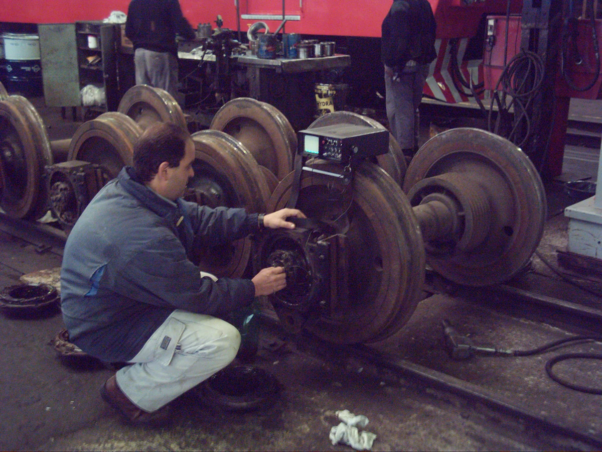
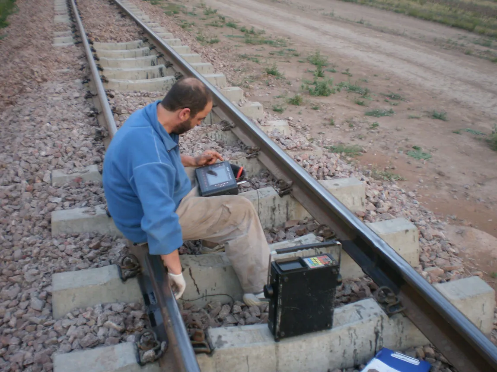

ENSAYOS NO DESTRUCTIVOS / ARGENTINA
Inspección por
ultrasonido.
Ensayos de rieles, soldaduras y componentes metálicos. Experiencia de campo desde 1998.
SERVICIOS
Cada pieza.
Cada indicación.
Cuatro modalidades de inspección para explorar el interior del material, desde una soldadura puntual hasta kilómetros de vía en servicio.

Ferroviaria
Exploración ultrasónica de rieles en servicio y piezas individuales.
Ver inspección
Manual
Ensayos puntuales en componentes metálicos de distintas geometrías.
Ver inspección
Automática
Ultrasonido con multipalpadores, Phased Array y ToFD.
Ver inspección
Semiautomática
Barridos manuales con equipos de registro para soldaduras de cañerías.
Ver inspecciónTECNOLOGÍA DE INSPECCIÓN
Debajo de
la superficie.
El sistema continuo registra indicaciones a lo largo de la vía y permite documentar su ubicación y dimensiones para la evaluación técnica.
Ver equipamiento- Canales de exploración
- 09
- Ubicación de indicaciones
- GPS

JORGE FLOCK / SEI
Experiencia
en terreno.
Desde abril de 1998, Jorge Flock desarrolla procedimientos de exploración ultrasónica para equipos, vías y componentes industriales.
El trabajo abarca desde el control de materia prima hasta la evaluación de piezas terminadas o en servicio.
Conocer la trayectoriaCONSULTAS TÉCNICAS
Hablemos de
tu inspección.
Contanos qué pieza, soldadura o tramo necesitás evaluar y en qué ubicación.
- Teléfono
- +54 9 11 5782-4853
- Correo
- jflock@hotmail.com
- Direcciones
- Bacacay 5452, Ciudad de Buenos Aires
Euclides 3381, Bella Vista